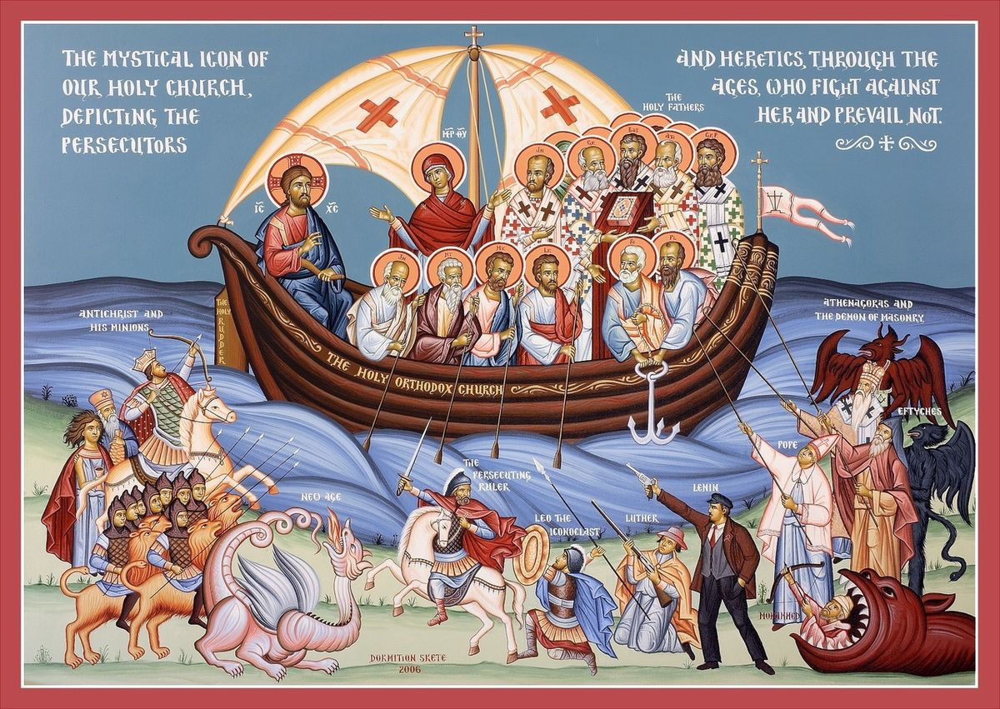

History of the Church
From Christ's promise to the apostolic era and councils.
The Orthodox Church understands her origin in the saving acts of Jesus Christ and in the descent of the Holy Spirit at Pentecost. From Jerusalem the Apostles went out to plant local communities that gathered for the teaching, the Eucharist, and the prayers. These churches developed in different cultures and languages yet remained one in faith through their bishops’ shared confession. The same pattern of worship and doctrine continues to shape Orthodox life today, giving the Church a living continuity with the apostolic age.
As the Gospel spread, the Church faced pastoral needs and doctrinal challenges that required common discernment. Regional and ecumenical councils assembled to examine teachings in the light of Scripture and the living Tradition received from the Apostles. Their definitions were not innovations but clarifications that protected the mystery of Christ and the work of the Holy Spirit. Because of this conciliar life, the Orthodox Church confesses a faith that is ancient, consistent, and life‑giving.
From the Gospels to Pentecost
Jesus proclaimed the Kingdom of God and gathered disciples who witnessed His death and Resurrection. At Pentecost the Holy Spirit descended upon the Apostles, establishing the Church as a visible community empowered for mission. The earliest Christians devoted themselves to the apostles’ teaching, the breaking of bread, and common prayer, which formed the basic pattern of Orthodox life. From these beginnings the Church spread throughout the Roman world through preaching, sacramental life, and acts of charity.
Apostolic Succession
The Apostles ordained bishops by the laying on of hands so that the same faith and grace would continue in each local church. This succession is not merely a chain of names but a sacramental reality that safeguards right teaching and the celebration of the Mysteries. Through their bishops, local churches remain in communion with one another and with the witness of the first generation. Because of apostolic succession, Orthodox worship and doctrine retain an unbroken continuity with the earliest Church.
Ecumenical Councils
When controversies arose, the Church gathered her bishops in councils to confess the faith publicly. Between the fourth and eighth centuries, seven Ecumenical Councils articulated the Creed and clarified doctrines concerning Christ and the Holy Spirit. These councils also guided worship and iconography, ensuring that prayer expresses true belief. Orthodox Christians receive these decisions as authoritative summaries of the apostolic faith, not as human opinions.